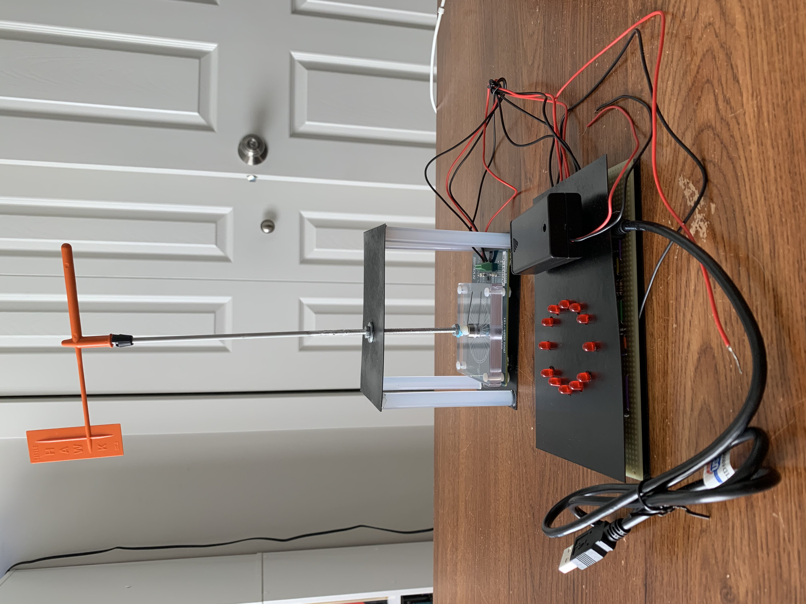
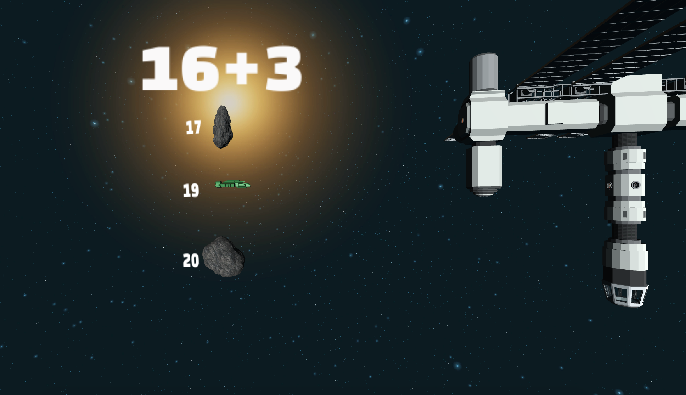
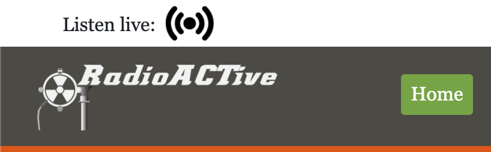
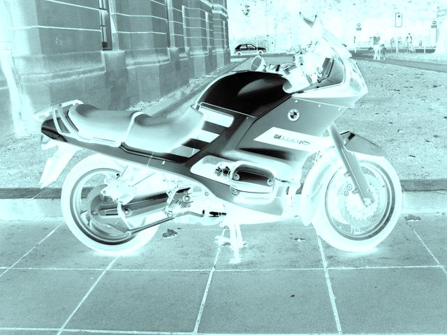

Small sailboats have a small flag at the top of their mast which is used to indicate the direction of the wind to the sailor.
This can be hard to use for beginners, and causes problems on sunny days when the sailor can be blinded, and on windy days when the wind can pick up and quickly change directions.
In this project I built an inexpensive wind vane with a user friendly display.
My design took out some of the concerns and inconveniences from sailing, which makes it safer and easier for people who are new to sailing to use.
I had a great time building this project.
I got to learn how to program in C, and use that to interface with an Arduino Nano chip in order to read from a magnetic angle sensor.
This took some testing to acomplish since the output of the sensor isn't always consistant, and the code had to be adjusted to compensate.
The project was completed by me individually, so it was a challenge to use new languages and technologies.
By starting simple and taking my time to understand the material, I was able to debug my system as I went, and gain a proper understanding of my project.
The project was later shared with my professors as well as my graduating peers.

Radio operators have noticed that air pollution can enhance the range of short wavelength radio signals.
The signal bounces between the pollution layer and the ground much like how light travels through a fiber optic cable.
The theory behind this project is that the angle which the signal is refracted, yields information about the constituents of the pollution.
Other methods only sample a very small fraction of the inversion layer.
Our approach, with a network of small transmitters and receivers, could measure a large portion of the inversion simultaneously.
By knowing the position of the antenna, the received signal strength, and some simple geometry, we can determine how much the signal is affected.
As this is a complex and ongoing experiment, my project was to design and build signal filters that assist in the determination of the quality of signals refracted from the inversion layer.
The highest quality signal occurs when the receiving antenna is aligned with the incoming radio waves.
This project required me to design and build my filter bank from scratch, determining the best components and their placement on the circuits.
There were many challenges to overcome and bugs to fix.
For example, most of the components were reliant on eachother and highly sensitive.
This means that if even one of the component's values was off by a fraction of an ohm, it would skew the results of the filter.
I overcame this by doing tedious calculations over the course of two weeks.
When I was finished with the project, I presented it to an audience at Geek Fest held at the college.

The motion detector circuit was a group project.
We turned a Circuit Playground board with a battery into a motion detector designed to be attached to a bike.
When it’s turned on, it will show you how far you are leaning in any direction by changing the color of the lights to red.
If you are leaning too far the board will beep at you, and the beeping will increasingly intensify until you reach a ninety degree angle.
It will also beep and flash at you in white if you go off a jump.
The motion detector has two settings called ‘normal mode’ and ‘sport mode’, which can be switched back and forth by pressing the left and right buttons.
Normal mode is activated by pressing the right button and lights up green.
It was designed for people who don’t usually do anything crazy while riding their bike, so it's more sensitive so that casual riders can better see their actions.
Sport mode is activated when the left button is pressed and it lights up blue.
It’s for people who ride their bikes a bit harder.
It had to be less sensitive to movements so that the board wasn’t constantly beeping and flashing as the rider moves around.
We also tried it on a skateboard when we were field testing.
Even though it was held down, the motion detector was too stimulated when placed directly on the vibrating board when it went down the street.
After some testing, the problem was solved by putting padding underneath it, commenting out the jump setting, and putting it on sport mode.
Field testing was the best part about this project.
Getting to work with a team, apply what we made to something physical and real, and then find out how to make it work by putting our heads together.

Blastn' Asteroids was a simple math game designed for elementary school students to practice and improve their math skills.
An addition or subtraction problem with three possible answers will approach you in the form of asteroids.
To pass a level you must answer all of the questions correctly and make it to the space station.
The program was created on a gaming platfom called Unity, and programmed using C++.
Working with Unity was the hardest part of this project, because of how complex it is and how many moving parts it has.
This was a semester long project, and the main focus was on teamwork and strategy planning.
The idea behind the class this project was for, was to use an Agile approach to product planning and completion.
We got to be really creative with this project and have fun with it since it was intended for second graders.
Website for RadioACTive and KRCL

This is an official website that was developed for a real client.
KRCL is a local radio station in Salt Lake City, and RadioACTive is one of their shows.
They asked me and my team to develop a working website for them that showed their history.
The website was made using several different languages including HTML, CSS, JavaScript, Bootstrap, and more.
It has a number of features on it.
The front page is a timeline that they can add events to.
People who are a part of their histoy, can submit their own stories to be added onto the timeline.
You can find recent episodes from the show, hear songs played on the radio that day, and submit a voice note directly to the show hosts and be heard on the radio.

This assignment was simple, but it was one of my favorites.
By changing the code of this java program, you can manipulate the filters on pictures.
This was the first assignment that I had a lot of fun with, and it encouraged me to stay on the path of computer science.
It also came at a convienient time as I was just starting to explore photography.
It sparked my creative side, and since then I have continued to find new ways of combining my computer skills with art and photography.
Description

Asteroids is a spin-off of the original game.
You get to destroy asteroids with laser-beams from your starship.
When all of the asteroids have been destroyed, you have won the game.
In my version I included an Octocat to keep you company as you complete your quest to take back the stars.
I had to think creatively to imagine and visulize how the game needed to look and run, and use critical thinking skills to enact what was visualized through creativity.
I worked with the SI and other students to work through problems and bugs, and to ask opinions on ideas.
This project taught me a lot about software design concepts and techniques for games.
I gained an appreciation of how complex and challenging a video game can be to create, despite its simplicity.